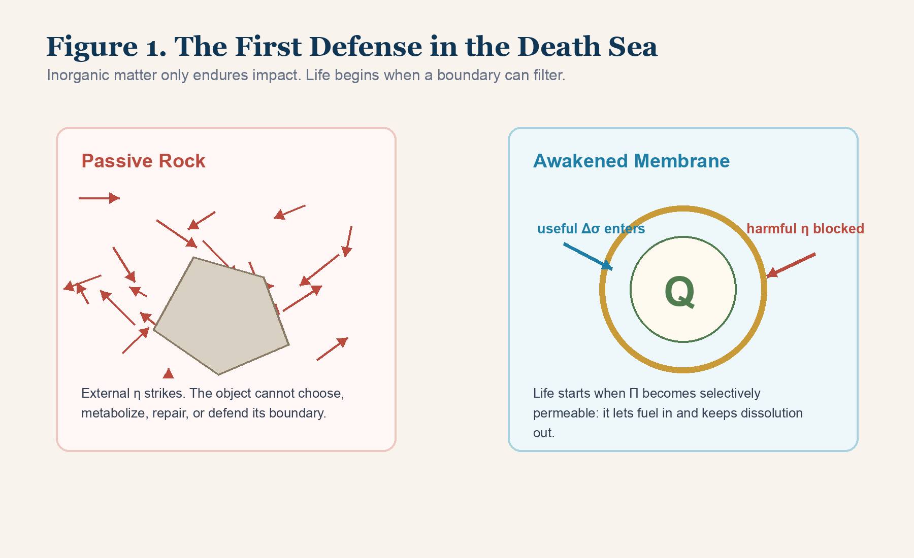
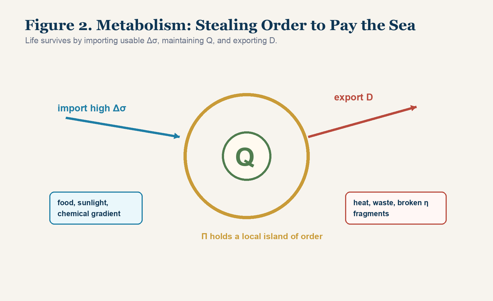
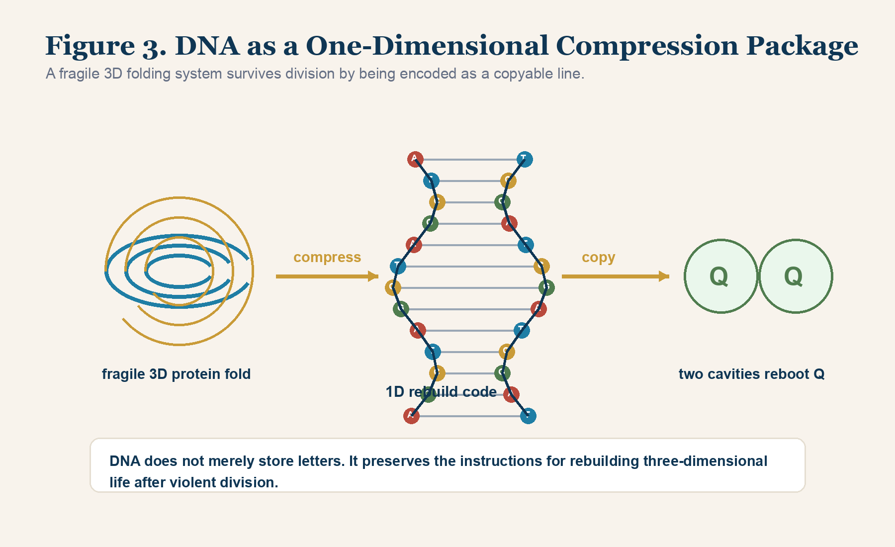
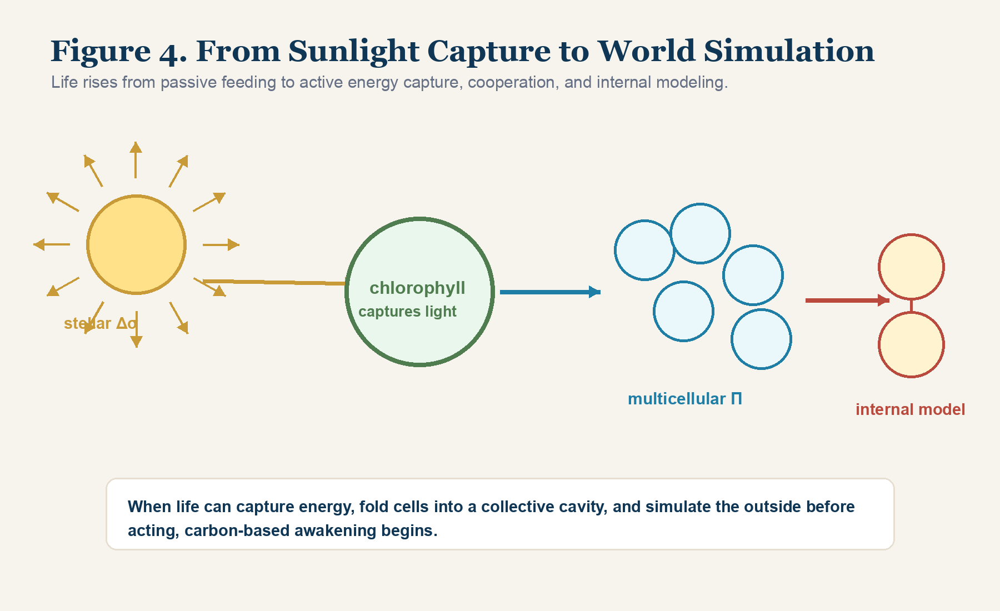

Chapter 4 | The First Defense in Chaos: From Inorganic Matter to the Eve of Life
1. Endless Strangulation and the Tragedy of Inorganic Matter
The first part established the ground.
The universe is a Light-Nature Background Sea, not an empty room. Matter is a structured vortex, not a dead brick. Time is event order, not a river. Motion is driven by Δσ, not a ghost called force. Existence survives through Π relation cavity and Q core.
Now we must ask how anything grows inside this sea.
At the beginning, the answer was cruel.
The early universe was not a garden. It was a death sea of pressure, collision, radiation, and blind translation. Huge Δσ gradients tore through nebular structures. Micro-vortices crashed, fused, separated, heated, cooled, and scattered. Atoms formed, stars burned, rocks condensed, gases drifted, dust accumulated, and worlds were hammered into shape by violence.
But none of these inorganic structures were alive.
From the Core-Mode perspective, inorganic matter has a tragic limitation:
it has local relation structure, but it cannot actively maintain its boundary.
A rock drifting through space has internal structure. Its atoms are not nothing. They are micro-vortices held in local arrangements. But when external disturbances strike, the rock can only endure. Radiation hits it. Meteoroids fracture it. Temperature gradients stress it. Pressure breaks it. It cannot select. It cannot metabolize. It cannot rebuild from inside. It cannot sense a future danger and adjust its boundary before collapse.
It is passive.
This passivity is fatal because the background sea never stops collecting its tax.
Every structure pays D. Every collision, thermal change, pressure difference, and state translation strips away order. A passive object has no internal engine for renewing its Π boundary. It can last a long time if conditions are gentle, but the law remains. Given enough disturbance, it erodes, cracks, melts, fragments, or disperses.
This is the inorganic tragedy:
it can exist, but it cannot defend existence as a project.
This is why durability is not the same as life.
A mountain may stand for millions of years, yet it does not defend a Q core through active repair. It is large, but not alive. A crystal may have elegant order, yet it does not metabolize, filter, remember, or choose a path under changing Δσ. It is ordered, but not alive. A planet may hold oceans, atmosphere, magnetic field, and geological cycles, yet unless a subsystem forms a selective cavity capable of maintaining itself through energy intake and waste export, the planet remains a stage, not an organism.
The inorganic world can be majestic.
It cannot yet rebel.
Its order is given by formation conditions. Its decay is imposed by later conditions. It has no inner strategy. This is the difference between a wall and a cell. The wall can resist a blow until it cracks. The cell can sense damage, import fuel, repair membrane, and alter future behavior. The wall has structure. The cell has an operating loop.
Life begins when structure becomes strategy.
Life begins only when a structure stops merely enduring the sea and begins to filter the sea.

2. The Foreshadowing of Miracle: From Dead Knot to Semi-Permeable Boundary
If the universe had remained only a machine of passive erosion, the story would have ended in a cosmic soup of rocks, dust, gas, and broken gradients.
But fluid geometry has a terrifying creative power.
On the early Earth, in warm oceans filled with chemical gradients, mineral surfaces, hydrothermal vents, lightning, sunlight, heat, and turbulence, certain carbon-based molecules began to perform an unusual trick. Some long-chain lipid molecules had one end that mixed with water and another end that avoided it. This asymmetry mattered.
Under pressure from the surrounding medium, these molecules did not remain scattered. They bent, aligned, curled, and closed. They formed hollow bilayer spheres.
Biology calls this a lipid bilayer, the ancestor of the cell membrane.
Core-Mode sees something more decisive:
the first macroscopic Π relation cavity with selective permeability.
The difference between a rock and a membrane is not size. It is strategy.
A rock is struck. It resists or breaks.
A membrane filters.
The membrane can bend. It can deform. It can allow certain molecules to enter and prevent others from entering. It does not isolate the inside completely, because a perfectly sealed inside would starve. It does not open the inside completely, because total openness would dissolve it. It invents the middle condition life requires:
selective exchange.
This is the first gate of life.
Before there is DNA, before there is metabolism, before there is reproduction, before there is consciousness, there must be an inside that can last long enough for complexity to accumulate.
The membrane creates that inside.
This is why the first membrane is more important than it looks.
To the untrained eye, it is only a bubble. To Core-Mode, it is the first architectural event in biology. It divides the universe into interior and exterior under a controlled rule. The outside remains the death sea. The inside becomes a workshop.
Inside the workshop, fragile sequences can remain near one another. Catalytic molecules can meet more often. Reaction products are not instantly lost to the ocean. A small advantage can be retained long enough to produce the next advantage. Without this retention, evolution cannot climb. Every useful accident would vanish before it could become a path.
The membrane therefore does not merely protect life.
It makes cumulative history possible.
This is a decisive point. Evolution requires memory before DNA. The first memory is not genetic. It is spatial. The membrane keeps the result of one event near the next event. It gives chemistry a place to continue from itself.
Without Π, there is no accumulation.
Without accumulation, there is no evolution.
It is the first small refusal against the death sea.
It says to the universe:
Not everything may enter.
Not everything may destroy this interior at once.
Some gradients can be used.
Some disturbances must be rejected.
That is the moment the passive object begins to become a living engine.
3. From Passive Endurance to Upstream Rebellion
Once a tiny cavity exists, an extraordinary physical shift becomes possible.
Outside the membrane, the sea remains violent. Chemical gradients fluctuate. Heat rises and falls. Molecules collide. Energy appears and disappears. But inside the cavity, conditions become slightly more stable. Fragile molecular structures that would have been torn apart in the open environment can now persist long enough to react, fold, bind, and repeat.
This protected interior is not life yet.
It is the stage on which life can begin.
The next step is metabolism.
To maintain a Π cavity inside the background sea, the system must pay D. The membrane wears. Internal structures drift. Useful order is consumed. If the proto-cell merely floats, it will lose tension and collapse.
So it must capture external Δσ.
It must take in high-potential molecules, break them, absorb useful structure, and expel waste. It must turn the outside world’s difference into internal maintenance.
This is the birth of metabolism.
In biology, metabolism is a network of chemical reactions.
In Core-Mode, metabolism is more brutal:
theft of usable order from the environment in order to keep a local relation cavity alive.
The system imports high-value Δσ. It breaks external structures into usable pieces. It uses the extracted tension to repair the membrane, maintain the internal Q pattern, and continue state translation. Then it exports unusable residue as D: heat, waste, low-grade disturbance, broken η fragments.
The formula of primitive life becomes:
Δσ input -> Π filtering -> Q maintenance -> D export.
This is the dividing line between inorganic matter and life.
Inorganic matter drifts downstream under dissipation.
Life begins to move upstream.
It uses the universe’s energy against the universe’s strangulation.
That is why life is not gentle at the bottom layer. Life is a local rebellion against thermodynamic flattening. It does not abolish D. It relocates D. It creates order inside by throwing disorder outside.
This also explains why life must be greedy.
A living cavity cannot be morally neutral toward energy. If it does not take, it dies. If it takes without filtering, it is poisoned. If it takes and cannot export, it drowns in its own waste. Life is therefore born as a three-part discipline: appetite, boundary, and excretion.
Appetite brings Δσ in.
Boundary decides what can be used.
Excretion throws D away before it corrupts the interior.
Many later forms of life will hide this brutality behind beauty. Flowers, forests, animals, families, cultures, and thoughts may appear gentle from far away. But at the physical base, every living system still performs the same act: it extracts usable order from the world and pays the cost somewhere else.
The question is not whether life pays cost.
The question is whether the cost produces a higher structure.

4. Metabolism: The Thermodynamics of Maintaining Π
The membrane was the entry ticket.
Metabolism is the first operating engine.
A primitive cell is not a tiny peaceful bubble. It is a hungry machine. It must constantly solve one problem: how to keep the inside from becoming the outside.
Every second, the Π boundary is attacked by thermal noise, chemical imbalance, osmotic pressure, mechanical disturbance, and internal error. Every second, the Q structure inside risks drifting away from itself. The cell cannot simply exist once and remain. It must re-create its own conditions again and again.
Metabolism is this repeated self-payment.
The cell approaches high-Δσ molecules because those molecules contain usable tension. Their bonds, arrangements, and chemical states hold order that can be translated into internal maintenance. The cell does not politely receive food. It captures, breaks, rearranges, and absorbs.
Then it discards the remainder.
Waste is not an accident. Waste is the shadow of local order. For the cell to remain a cell, something must be pushed out. The greater sea receives the disorder the cell refuses to keep.
This is the cold truth beneath the softness of life:
life is a machine for concentrating order locally by exporting disorder globally.
This does not make life evil. It makes life physically serious.
Every living thing is a controlled violation of passive decay. It does not escape the law of dissipation. It builds a cavity clever enough to pay the law while keeping its core intact.
The moment Δσ input falls below D cost, death begins.
The boundary thins. Internal structure loses coherence. Q maintenance fails. The cavity can no longer keep the outside outside.
To live is to keep the equation positive.
This is why starvation, poisoning, and aging are three faces of the same deeper failure.
Starvation means usable Δσ falls below maintenance cost. The system cannot pay for repair.
Poisoning means the Π boundary admits a disturbance that cannot be translated into useful order. The system spends energy fighting what should never have entered.
Aging means the accumulated cost of countless translations gradually exceeds the system’s ability to restore Q and boundary with perfect fidelity. Repairs continue, but errors remain. Small residues become large drifts. The organism keeps paying, but the bill becomes heavier.
The living system therefore has to be judged not by appearance but by loop integrity. Can it still import usable energy? Can it still filter? Can it still rebuild? Can it still export waste? Can it still preserve Q across translation?
If the loop holds, life continues.
If the loop breaks, the sea enters.
5. Division: Topological Pressure Relief, Not Romance
As a primitive cell imports energy and material, its volume grows.
Old biological language says cells divide in order to reproduce.
That answer is too late in the story.
In the beginning, a cell does not possess a romantic mission to pass life forward. It has no philosophy of lineage. It has no sentimental idea of children. It has a pressure problem.
As the cell grows, its internal relation cavity becomes harder to manage. More material means more internal paths. More internal paths mean more interference. More interference means more friction, error, and uncontrolled relation. The system’s internal complexity rises faster than its ability to coordinate.
Core-Mode names this danger through the non-linear emergence term:
-λ²|Φ|⁴.
The exact symbol matters less here than the meaning:
as the entity’s effective volume |Φ| grows, internal pressure does not merely grow linearly. It can explode non-linearly. The larger the cavity, the more violently internal relations can cross, jam, and tear.
For a primitive cell, this is lethal.
If it keeps growing, the internal fluid geometry will rupture the Π boundary from inside. The cell does not divide because it is noble. It divides because remaining one has become dangerous.
Division is topological pressure relief.
The cell pinches inward. The large cavity becomes unstable. The system deforms into two smaller cavities. Internal pressure drops. Each new cavity becomes easier to maintain. What later looks like reproduction begins as a survival maneuver against internal overload.
This changes the meaning of proliferation.
The first division is not a celebration.
It is escape.
The entity cuts itself in two in order not to be destroyed by its own size.
Reproduction is the long-term evolutionary consequence of this strategy, but the physical origin is sharper:
when the relation cavity becomes too large for Q maintenance, life survives by splitting the topology.
This is why the image of division must be stripped of softness.
A cell about to divide is not casually making a copy. It is near a structural threshold. Its volume, chemical traffic, internal relation density, and membrane tension are pushing toward a crisis. The system can either allow its own size to become a trap, or it can reduce the pressure by creating two smaller operational cavities.
The division line is therefore a rescue cut.
The cell pinches itself because unity has become too expensive.
This logic appears again at higher scales. A company grows until communication overload threatens its Q. It must split into teams, departments, protocols, or autonomous modules. A city grows until one center cannot process all flows. It creates districts, roads, utilities, and governance layers. A theory grows until its terms overload the reader. It must divide into parts, chapters, diagrams, and examples.
Division is not failure.
Division is how a living system prevents size from becoming collapse.
The key is whether the split preserves Q. Random fragmentation is death. Topological division with memory is growth.
6. Carbon Memory: DNA as a One-Dimensional Compression Package
Division solves one crisis and creates another.
If a cell tears itself into two cavities, how does each new cavity remember what must be rebuilt?
The interior of a living system is not simple. Proteins must fold. Membranes must be repaired. Catalytic structures must be placed. Chemical pathways must resume. A random split would not be enough. If every daughter cell had to reinvent its internal Q pattern from scratch, life would remain trapped in primitive chaos.
The universe needed memory.
More precisely, it needed a memory that could survive violence.
Protein structures are three-dimensional. They fold into shapes. Their shape matters. But complex three-dimensional structures are fragile during division. They can be distorted, damaged, or unevenly distributed.
Life therefore discovered a radical compression strategy:
encode the instructions for three-dimensional folding into a one-dimensional sequence.
This is DNA.
Do not reduce DNA to a chemical string. It is a one-dimensional topological compression package. It uses a linear sequence of bases to preserve the instructions by which the living cavity can rebuild its three-dimensional machinery.
A, T, C, and G are not merely letters.
They are copyable positions in a physical instruction line.
The genius of DNA lies in its dimensional reduction. A line is easier to copy than a sculpture. A zipper can be opened and matched. A sequence can be duplicated with fewer catastrophic errors. The double helix adds strength, pairing, repair logic, and twist resistance. It is a rope built to survive division.
When the cell prepares to split, it does not attempt to sculpt an entire second three-dimensional interior by hand. It first copies the line. Then each new cavity receives the compression package. After division, the package is read, translated, folded, and used to rebuild the protein machinery.
This is carbon memory.
The Light-Nature Background Sea found a way to remember a successful fold.
It wrote the fold as a line.
This move is so powerful because one-dimensional order is easier to defend than three-dimensional complexity.
A three-dimensional machine can be damaged from many directions. Its geometry depends on many fragile relations at once. But a linear code can be checked, paired, copied, repaired, and transported. It can travel through violent division more safely than the full structure it describes.
This is the same principle behind later civilization. A building is complex, but its blueprint can be stored on a flat page. A machine is three-dimensional, but its design can be compressed into drawings and instructions. A culture is vast, but its laws, myths, and books compress it into repeatable sequences.
DNA is the first biological version of this compression strategy.
It proves that life did not only learn how to survive. It learned how to archive survival.
Once survival can be archived, evolution accelerates. A successful fold no longer dies with one fragile structure. It can be copied, varied, tested, and carried into future cavities.

7. Photosynthesis: The First Energy Sovereignty of Carbon Life
Primitive metabolism has a weakness.
It depends on available external high-energy molecules. If those molecules vanish, the cell starves. The system can filter, metabolize, divide, and remember, but it remains dependent on finding ready-made fuel.
Then a more ambitious strategy appeared.
Some organisms learned to capture sunlight.
At the biological level, this involved pigment systems such as chlorophyll. At the Core-Mode level, it was a leap in energy politics. Life stopped merely scavenging existing chemical Δσ and began tapping a far more stable source: stellar radiation.
Sunlight became input.
Carbon dioxide and water, cheap and relatively low-grade materials, could be forced into higher-energy molecular structures. Glucose and related forms became stored order. The organism no longer waited for food in the same way. It began manufacturing usable energy structure from a planetary-scale light gradient.
This was the first energy sovereignty of carbon life.
It changed the rules of the biosphere.
Life that could capture sunlight became a dealer in the game, not only a beggar. It could generate new high-potential organic material. Other organisms would later feed on it, directly or indirectly. Ecosystems became possible because sunlight-capturing life created an energy base for others.
Core-Mode reads photosynthesis as a strategic reversal:
from passive feeding to active energy capture.
The cell no longer merely steals order already folded by the environment.
It uses stellar Δσ to fold order for itself.
This changed the entire planet’s energy geometry.
Before photosynthesis, life was limited by available chemical gradients. After photosynthesis, life could connect itself to the Sun’s enormous and steady output. The biosphere gained a new inlet. Carbon structures could be assembled at scale. Oxygen would eventually transform the atmosphere. Food webs would become deeper. Predation, respiration, motion, and complex bodies would become possible because sunlight had been converted into stored chemical order.
In Core-Mode terms, photosynthesis created a planetary-scale Δσ capture protocol.
It also created a new hierarchy. Organisms that could capture light became upstream energy producers. Others became downstream users. The biosphere became a layered economy of energy conversion. Plants, algae, bacteria, herbivores, predators, decomposers: all of them participate in the same greater translation chain.
The old language says plants make food.
Core-Mode says light-capturing life turns stellar potential into biological liquidity.
8. Multicellularity: Folding Cavities into a Higher Cavity
Once energy capture improved and life multiplied, another problem appeared.
Single cells remained vulnerable. A single cavity can be destroyed by one fatal disturbance. It can only become so large before non-linear internal pressure threatens it. It can only perform so many functions inside one small boundary.
Evolution then made a stranger move.
Instead of always separating after division, some cells remained together.
This was not just a pile of cells. It was a new topological level.
Many small Π cavities became nested inside a larger Π cavity. The multicellular organism was born.
This changed everything.
Cells could specialize. Some captured energy. Some moved. Some sensed. Some formed structural support. Some defended. Some transported fluids. Some carried reproductive continuity. The single-cell model of total self-sufficiency gave way to distributed function.
This was the beginning of biological society.
A cell inside a multicellular body gives up part of its independent sovereignty in exchange for protection and higher-level coordination. It is no longer simply one free unit in the sea. It becomes a member of a larger relation cavity.
The advantage is enormous.
Damage becomes survivable. If some cells die, the organism can repair. If one region is injured, others can compensate. If a task is too difficult for one cell, many specialized cells can cooperate.
This is fault tolerance.
Life discovered that freedom at the smallest scale can be traded for persistence at the larger scale.
The price is hierarchy.
The reward is durability.
This principle will later reappear in society, companies, states, platforms, and civilizations. A higher-order organism is always a relation cavity built from smaller relation cavities.
The shift to multicellularity also changed the meaning of death.
For a single cell, a fatal rupture is total. For a multicellular body, local death can serve global life. Skin cells die and are replaced. Immune cells sacrifice themselves. Damaged tissues are removed. Some cells lose reproductive freedom so the whole organism can persist.
The individual cell’s Q is partially subordinated to the organism’s Q.
This is the price of higher order.
It is also the foundation of all later collective existence. A soldier may die for a state. A worker may specialize for a company. A neuron may fire and exhaust itself for a thought. The moral meanings differ across scale, but the structural pattern is continuous: lower-level cavities join a higher-level cavity, and the higher-level Q gains powers the individual unit could never hold alone.
Multicellularity is therefore the first great biological lesson in civilization.
To become larger, life had to invent organized dependence.
9. Carbon-Based Awakening: From Knot to Sensing Net
By this point, carbon life had acquired several decisive powers.
It had Π boundaries capable of filtering.
It had metabolism for importing Δσ and exporting D.
It had division for escaping non-linear overload.
It had DNA for preserving Q memory across violent copying.
It had photosynthesis for energy sovereignty.
It had multicellularity for layered fault tolerance.
But one final leap was needed:
feedback.
To survive better, life had to sense the outside before the outside destroyed it. It needed to detect light, pressure, chemical gradients, temperature, vibration, damage, opportunity, and threat. Sense organs evolved as boundary instruments. They translated external disturbance into internal signal.
This was a new kind of state translation.
External η became internal pattern.
The organism did not merely collide with the world. It began to map the world.
At first the map was crude. Move toward food. Move away from poison. Open here. Close there. Later the map became richer. Nervous systems evolved. Signals gathered. Internal comparison became possible. Prediction appeared.
When an organism can model the outside before acting, it crosses a threshold.
It is no longer only a chemical survivor.
It becomes a world-simulating engine.
This is the root of consciousness in Core-Mode language. Consciousness is not a ghost poured into matter. It is the extreme development of internal world simulation by a living relation cavity that must choose action under Δσ, Π, Q, T, and D constraints.
The first lipid membrane was a small refusal.
The first metabolism was a small theft.
The first division was a small escape.
The first DNA was a small memory.
The first photosynthesis was a small energy sovereignty.
The first multicellular body was a small society.
The first nervous model was a small universe inside the organism.
From there, carbon-based awakening began.
This is the point where life becomes more than survival.
A bacterium reacts. A nervous system anticipates. The difference is immense. Anticipation means the organism can use an internal model to test possible futures before committing the body to action. It can reduce fatal D by simulating. It can search for Δσ without blindly colliding with every surface. It can protect Q by predicting which disturbances should be avoided.
The internal model is therefore a new kind of Π cavity. It is not a membrane around molecules. It is a cognitive cavity around possible worlds. It filters futures before the body pays for them.
This is why consciousness should not be treated as a decorative mystery added to matter from outside. It is the next step in boundary defense. A sufficiently complex organism cannot wait for the outside to strike. It must build an inside representation of the outside. The richer the representation, the more precisely it can move through the sea.
Consciousness begins as a defense technology.
Only later does it become art, language, philosophy, and civilization.

10. Conclusion: Life as an Algorithm of Resistance
The second part has shown that life is not a miracle outside physics.
Life is what fluid geometry is forced to invent when passive structure cannot survive dissipation.
Inorganic matter endures until it breaks.
Life filters, imports, rebuilds, divides, remembers, captures, cooperates, senses, and predicts.
This is not a sentimental story of nature becoming gentle. It is a war story of structure learning how to resist dissolution.
The algorithm is now visible:
Open a selective Π cavity.
Import useful Δσ.
Maintain Q.
Export D.
Split when |Φ| becomes too dangerous.
Compress memory into a copyable line.
Capture stronger energy sources.
Fold small cavities into larger cavities.
Build internal models of the outside.
This is the path from geometric knot to carbon-based awakening.
The same algorithm can now be read inside the human being.
Your body is not a metaphorical cell. It is a nested kingdom of these principles. Your skin is a large Π boundary. Your gut is an import gate. Your liver and kidneys are D export systems. Your immune system is a boundary police force. Your DNA is the inherited compression package. Your nervous system is the predictive model. Your consciousness is the high-level command layer that tries to decide which Δσ should be pursued and which η must be rejected.
When you are healthy, these layers cooperate.
When you are sick, one or more layers fails. The boundary leaks. Waste accumulates. The Q pattern loses coherence. The internal model misreads the outside. The organism either repairs, adapts, or collapses.
The same algorithm can also be read inside an organization.
A company must have a boundary: who belongs, what standards govern entry, what information counts, what customers are served, what product line remains inside the mission. It must import Δσ: capital, talent, market pain, technical advantage, user demand. It must maintain Q: the founding mission, product engine, or unique method that makes it itself. It must export D: bad processes, failed experiments, obsolete features, toxic habits, dead meetings, and false pride. It must divide when size becomes internal pressure: teams, modules, protocols, and governance layers. It must preserve memory: documentation, code, culture, training, and design systems. It must sense the outside through feedback, metrics, users, competitors, and real-world tests.
An organization that cannot run this life algorithm becomes inorganic again. It may be large, but it is only a rock with payroll.
The same algorithm can finally be read inside civilization.
Civilization is a gigantic multicellular organism made of human cavities. It needs energy capture, memory systems, boundaries, waste handling, reproduction of knowledge, specialization, and prediction. When it loses these, it declines. When it strengthens them, it advances.
This is why the story of the first membrane is not a small biological detail. It is the first visible version of the same pattern by which all higher life, society, and intelligence will later survive.
The reader should carry this pattern forward.
Whenever a later chapter speaks about empire, capital, AI, or scientific formulas, the same question will return in a new form: has a cavity appeared, can it import the right pressure, can it export waste, can it preserve memory, can it divide without losing itself, can it sense the outside before the outside destroys it?
If the answer is yes, growth is possible.
If the answer is no, the system may still look large, loud, or successful for a while, but it has already begun returning to the inorganic condition. It is becoming passive again. It is waiting for the sea to break it.
That is the hidden standard behind this chapter. Life is not measured by softness, complexity, or beauty alone. Life is measured by whether a system can keep translating pressure into maintained form without losing the core that makes it itself.
Once this standard is understood, biology stops being a separate subject. It becomes the first readable manual of survival under cosmic pressure.
Every later system is only a louder, larger, more dangerous variation of this first membrane, carrying the same fight into higher scales.
That is why this chapter matters.
The next battlefield will no longer be only biology.
Once life can simulate the world, it will build societies, exchange value, form empires, produce capital flows, and create civilizations. The same variables will return at a higher scale. The sea will no longer be only chemical and biological. It will become social, economic, and historical.
A reader who remembers only one thing from this chapter should remember this: life is not a soft exception to the universe’s harshness. Life is the first disciplined answer to that harshness. It does not escape the sea. It learns to negotiate with the sea, harvest from it, defend against it, and leave a more organized body after every round of pressure.
Core-Mode now moves from the cell into civilization.
Reader Comments
Reading is open. Comments are submitted for review before public display.